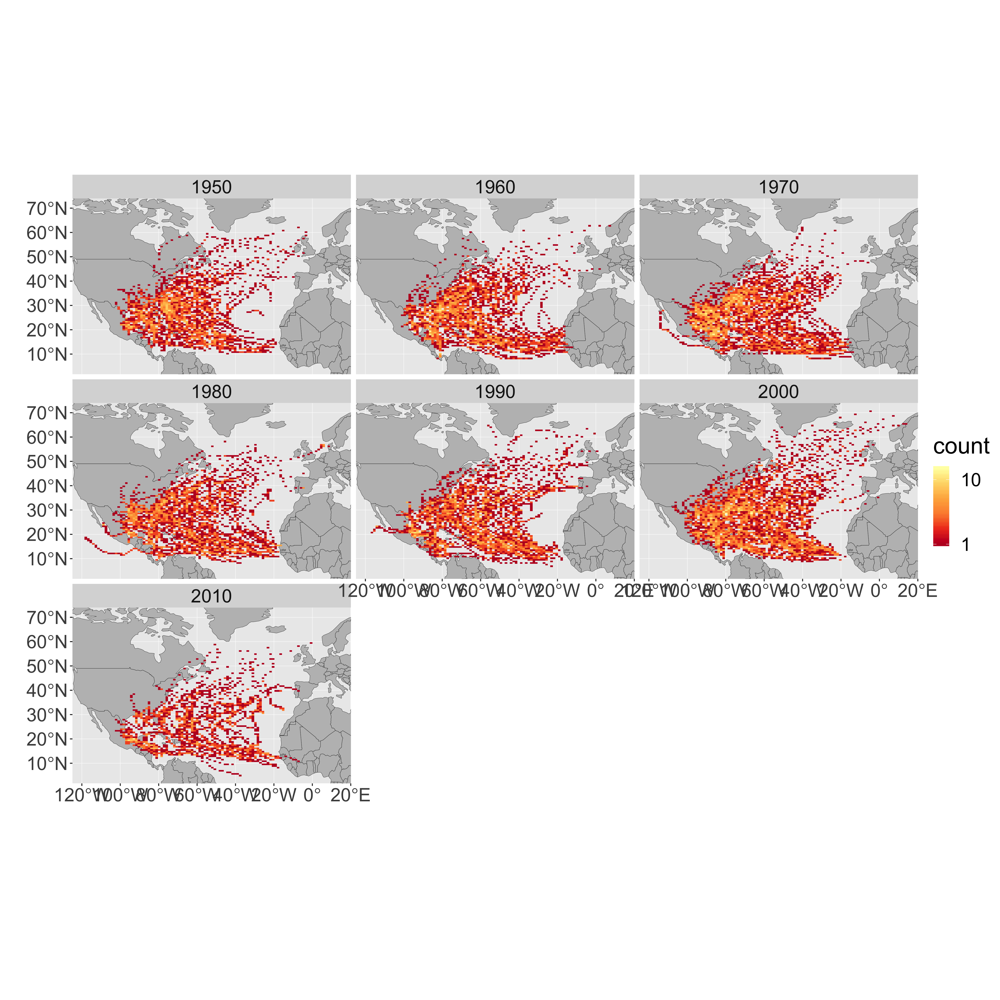
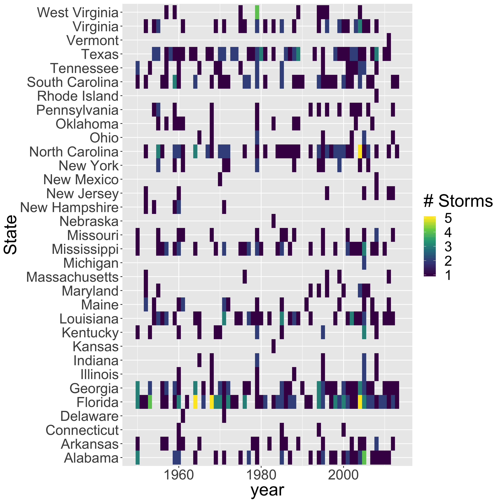

library(sf)
library(tidyverse)
library(ggmap)
library(rnoaa)
library(spData)
data(world)
data(us_states)In this case study you will download storm track data from NOAA, make a summary plot, and quantify how many storms have hit each of the United States. This will require you to use a spatial join (st_join).
Your desired figure looks something like the following: 
Calculate a table of the five states that have experienced the most storms.| NAME | storms |
|---|---|
| Florida | 74 |
| Georgia | 45 |
| North Carolina | 45 |
| Texas | 45 |
| Alabama | 36 |
storm_shp() for basin = "NA"storm_shp_read()sf format with st_as_sf()filter()mutate_if() to convert -999.0 to NA in all numeric columns with the following command from the dplyr package: mutate_if(is.numeric, function(x) ifelse(x==-999.0,NA,x))mutate(decade=(floor(year/10)*10))st_bbox() to identify the bounding box of the storm data and save this as an object called region.ggplot() to plot the world polygon layer and add the following:facet_wrap(~decade) to create a panel for each decadestat_bin2d(data=storms, aes(y=st_coordinates(storms)[,2], x=st_coordinates(storms)[,1]),bins=100)scale_fill_distiller(palette="YlOrRd", trans="log", direction=-1, breaks = c(1,10,100,1000)) to set the color rampcoord_sf(ylim=region[c(2,4)], xlim=region[c(1,3)]) to crop the plot to the region.st_transform to reproject us_states to the reference system of the storms object (you can extract a CRS from a sf object with st_crs(storms)storm_states <- st_join(storms, states, join = st_intersects,left = F). This will ’add` the state to any storm that was recorded within that state.group_by(NAME) to group the next step by US state (beware that there is NAME for name of state and Name for name of storm. storm_statessummarize(storms=length(unique(Name))) to count how many unique storms occurred in each state.arrange(desc(storms)) to sort by the number of storms in each stateslice(1:5) to keep only the top 5 states ```Try to replicate the following graphic using the data you transformed above.

Can you sort the rows (states) in order of storm frequency (instead of alphabetical?